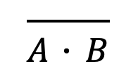
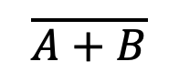
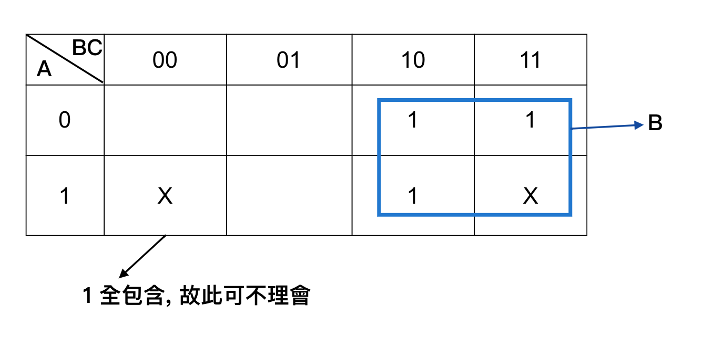
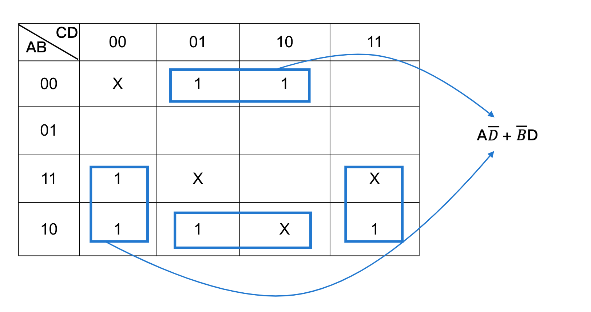
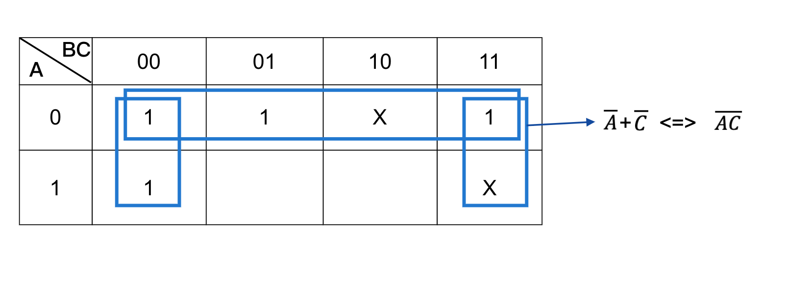

數位邏輯 Digital Logical
布林代數 (Boolean Algebra)
Def: 用來表示 true (真) 或 false (偽)的邏輯運算, 通常以 0 表示 false, 1 表示 true
常用的布林代數
-
NOT (~, ‾, ')
- 概念：
true -> false,false -> true - truth table (真值表)
將所有 input 變數組合對應的 output 皆列出來謂之
input output A NOT A 0 1 1 0
- 概念：
-
AND (•)
- 規則：
input: A, B 2個布林值
output: A, B 皆為 1 => 1, 否則為 => 0 - truth table
input output A B A • B 0 0 0 0 1 0 1 0 0 1 1 1
- 規則：
-
OR (+)
- 規則：
input: A, B 2個布林值
output: A, B 只要有一個 1 => 1, 若 A, B 皆為 0 => 0 - truth table
input output A B A + B 0 0 0 0 1 1 1 0 1 1 1 1
- 規則：
-
XOR (exclusive - OR): ⊕
- 規則：
input: A, B output: A, B 相同 => 0, A, B 相異 => 1 - truth table
input output A B A ⊕ B 0 0 0 0 1 1 1 0 1 1 1 0
- 規則：
-
XNOR (exclusive - NOR): ⊙
- 規則：
input: A, B output: A, B 相同 => 1, A, B 相異 => 0 - truth table
input output A B A ⊙ B 0 0 1 0 1 0 1 0 0 1 1 1
- 規則：
-
implies (→)
- 規則：
input: A, B output: A → B, 即 ((NOT A) or B) - truth table
A B NOT A NOT A or B 0 0 1 1 0 1 1 1 1 0 0 0 1 1 0 1
- 規則：
-
NAND
- 規則：
input: A, B output: ‾A • B (先做 AND 在做 NOT)  - truth table
A B A．B ‾A • B 0 0 0 1 0 1 0 1 1 0 0 1 1 1 1 0
- 規則：
-
NOR
- 規則：
input: A, B output: ‾ A + B (先做 OR 在做 NOT)  - truth table
A B A+B ‾A + B 0 0 0 1 0 1 1 0 1 0 1 0 1 1 1 0
- 規則：
Priority: NOT > AND > OR > Implies, NOT 為單元運算子, 所以最高
- Note: 7, 8 為萬用閘 universal gate
定理
-
單一律： x + x = x
x • x = xx x x • x 0 0 0 1 1 1 -
x + 0 = x
x + 1 = 1
x • 0 = 0
x • 1 = xx 0 x • 0 0 0 0 1 0 0 -
補數定律
 ‾ ‾x = x, 即 (x')' = x
‾ ‾x = x, 即 (x')' = xx ‾x ‾ ‾x 0 1 0 1 0 1 -
交換律
x + y = y + x
x • y = y • x -
結合律
( x + ( y + z )) = (( x + y ) + z )
( x • ( y • z )) = (( x • y ) • z ) -
分配律
x • (y + z) = (x • y) + (x • z) => • 對 + 的分配律
x + (y • z) = (x + y) • (x + z) => + 對 • 的分配律 (布林中有, 數字無此) -
笛摩根定律
(1) ‾x•y = ‾x•‾y
(2) ‾x+y = ‾x+‾y -
吸收定律
-
x + xy = x
說明：
x + xy = x • 1 + x • y
= x (1 + y)
= x • 1
= x -
x • (x + y) = x
說明：
x • (x + y) = x • x + x • y
= x + xy
= x -
延展:
(A+AB+AC+AD+......)
= A (1+B+....)
= A • 1
= A
-
-
補數定律
x + ‾ x = 1
x • ‾ x = 0
ex: A + B = A + ‾A B
A + B = A + B
= A + (A + ‾A) B
= A + AB + ‾A B
= A + ‾A B -
對偶性
A + 1 = 1
A • 0 = 0
=> + -> •
=> • -> +
=> 1 -> 0
=> 0 -> 1
布林函式
min-term: 包含所有變數的乘積項, ex: A, B, C => ‾A•B•‾C, A•‾B•C, A•B•C
max-term: 包含所有變數的加總項, ex: A, B, C => ‾A+‾B+C, A+‾B+C, A+B+C
ex1: 3個 input 變數 (x, y, z)的 min-term, max-term
| x y z | min-term(m) (0 取補) | max-term (M) (1 取補) |
|---|---|---|
| 0 0 0 | ‾x • ‾y • ‾z (m0) | x + y + z (M0) |
| 0 0 1 | ‾x • ‾y • z (m1) | x + y + ‾z (M1) |
| 0 1 0 | ‾x • y • ‾z (m2) | x + ‾y + z (M2) |
| 0 1 1 | ‾x • y • z (m3) | x + ‾y + ‾z (M3) |
| 1 0 0 | x • ‾y • ‾z (m4) | ‾x + y + z (M4) |
| 1 0 1 | x • ‾y • z (m5) | ‾x + y + ‾z (M5) |
| 1 1 0 | x • y • ‾z (m6) | ‾x + ‾y + z (M6) |
| 1 1 1 | x • y • z (m7) | ‾x + ‾y + ‾z (M7) |
特色：
- ‾mi = Mi, ‾Mi = mi
‾m3 = M3
=> ‾ ‾x • yz = ‾ ‾x + ‾y + ‾z = x + ‾y + ‾z - f(xyz) = x ‾y z + ‾x y z + x y ‾z = m5 + m3 + m6 = Σm(0, 3, 5, 6)
f(xyz) = (x + ‾y + z) • (‾x + y + z) = M2 • M4 = Σm(2, 4) - f = Σ(mi) = π(Mj)
- Note: j 是所有組合去除掉 i 的
- ex: f(x, y, z) = Σm(1, 2, 3, 4) = π(0, 5, 6, 7)
正規化：
f(x, y, z....) = ......(正規化)
- Sum of min-term (最小項之和)
格式：
f(xy) = xy + ‾x y + x ‾y
f(xy) = xy + ‾y (Sum of product) (sop 每一個都用乘, 則乘跟乘之間用加的) - Sum of max-term (最大項之積)
格式：
f(xy) = (x + y) • (‾x + y)
f(xy) = (x + y) • ‾x (product of sum) (pos)
ex2: 將 f(xyz) = x + ‾ y‾z (‾x+y) 化成 Sum of min-term
Sol:
step1: 利用笛摩根定律, 將 '‾' 置於單一變數上, 形成 sop 格式
f(x, y, z) = x + ‾ y‾z(‾x+y)
= x + (‾y + ‾ ‾z) (‾x • ‾y)
= x + ‾x‾y • ‾y + ‾x‾y • z
= x + ‾x‾y + ‾x‾y‾z
= x + ‾x‾y
step2: 將 sop 非 min-term 者化成 min-term
作法：
- • (所缺變數 + ‾所缺變數)
- 用 • 對 + 的分配律展開
x + ‾x‾y = x • (y + ‾y) (z + ‾z) + ‾x‾y (z + ‾z)
= xyz + xy‾z + x‾y z + x‾y‾z + ‾x‾y z + ‾x‾y‾z
= m7 + m6 + m5 + m4 + m1 + m0
= Σm(0, 1, 4, 5, 6, 7)
ex3: 將 f(x, y, z) = x + ‾yz (x + ‾y) 化成 Product of max-term
Sol:
step1: 利用笛摩根定律, 將 '‾' 置於單一變數上, 形成 pos 格式
f(x, y, z) = x + ‾yz(x + ‾y)
= x + (‾y + ‾z) • (x + ‾y)
= (x + ‾y + ‾z) • (x + x + ‾y)
= (x + ‾y + ‾z) • (x + ‾y)
step2: 將非 max-term 化成 max-term
作法：
- 用 + (所缺變數 • ‾所缺變數)
- 用 + 對 • 的分配律展開
(x + ‾y + ‾z) • (x + ‾y) + (z • ‾z)
= (x + ‾y + ‾z) • (x + ‾y + z) • (x + ‾y + ‾z)
= (x + ‾y + z) • (x + ‾y + ‾z)
= M2 • M3
= π(2, 3)
布林函式化簡 (simplity circuit)
化成：
- 最簡的 sop
- 最簡的 pos
方法： 卡諾圖
-
Def:
- k 個 input => 2^k 個格子
- 每個格子代表 => min-term, max-term
-
Ex: input x, y, z , 求 sop?

-
Ex: input w, x, y, z , 求 sop?

化簡原則：
- 最簡 sop
- 作法：
(1) 將布林函式的 min-term 填 "1" 於卡諾圖的對應方格
(2) 用最少的矩形方格將 "1" 包含, 其中 單一矩形方格越大越好 (為 2 的冪次方)
(3) "1" 全部被包含, "1" 可重複被包含
(4) 矩形方格為 2^k => 消除 k 個變數 - Ex1: 求 sop?

- Ex2: f(x, y, z) = ‾x y z + xyz + xy‾z + x‾y‾z, 求 sop?

- Ex3: f(A, B, C) = AC + AB + ABC + BC, 求 sop?

- Ex4: 求 sop?

- Ex5: f(A, B, C, D) = (‾A + ‾B + ‾D) • (‾A + C + ‾D) • (A + ‾B + ‾D) • (‾B + C + D), 求 pos?

- 作法：
Don't care condition (隨意條件)
-
Def: 對結果不具影響之變數組合
-
目的： 進一步化簡電路
-
規則： Don't care condition 於卡諾圖, 當中填入 "x" 其中：
- "x" 不見得要用
- "x" 可重複使用
- "x" 可增加相鄰方格數
-
Ex1:
 -
Ex2: f(A, B, C, D) = Σm(1, 3, 8, 9, 10, 12) + Σd(0, 11, 13, 14) [d means don't care], 求最簡 sop?
 -
Ex3: f(A, B, C) = Σm(0, 1, 2, 4) + Σd(3, 6), 求 sop?
